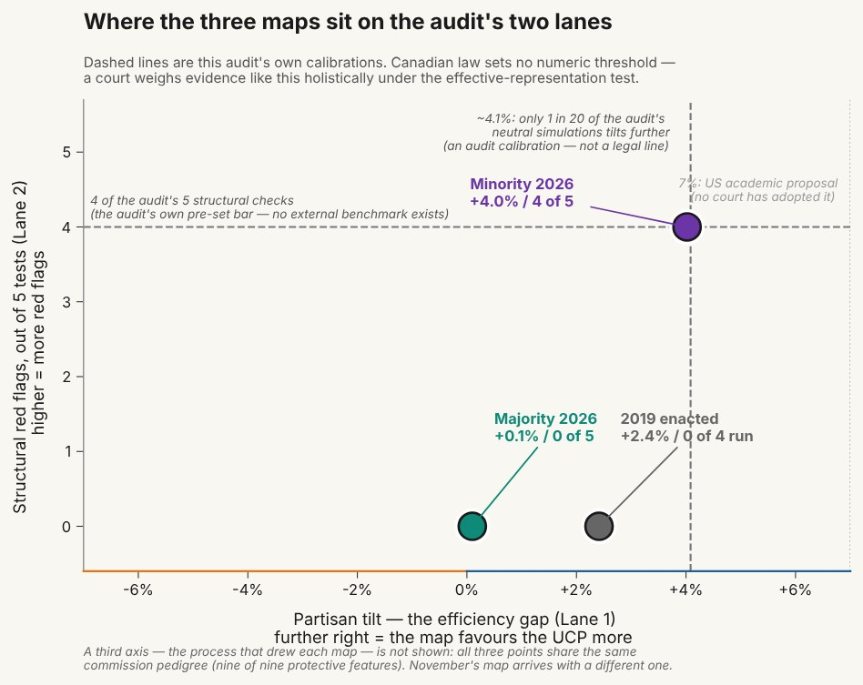

This page explains every test behind the audit, in plain words. The idea under all of them is simple. To tell whether a map is unusual, I compare it with 1,010,000 maps a computer drew without ever seeing a vote. Then I check where the real maps land among them. There are no formulas here. If you can read a weather forecast, you can read this.
1,010,000 computer-drawn maps
A computer drew 1,010,000 Alberta maps, each with 87 ridings, the number on the 2019 map. It built them from the same 4,765 voting areas the real maps use. Every map follows the two hard rules the commission followed. Each riding holds close to the same number of people: within 25% of the average, and each drawing step aims for 12.5%. And each riding is one connected piece.
The computer works one small step at a time. It takes two ridings that share a border and merges them into one. Then it splits that area into two new legal ridings, at random. It repeats this 1,010,000 times and saves the map after each step. The method is called ReCom. It is the standard tool in this field.
The key fact: the computer never sees a vote. It does not know where UCP or NDP voters live. That is the only sense in which this site calls these maps neutral. So if a computer-drawn map still leans one way, the lean comes from where Albertans live and from the two rules. If a real map leans much further than nearly all of them, geography and the rules alone become a poor explanation.
Four things to know about these maps:
- The random numbers came from a public source. Every random choice starts from a seed, a starting number. The seed joins a published value from a public randomness beacon (drand, run by the League of Entropy, a group that includes Cloudflare) with a fixed label. The beacon value (round 5,500,000) was public in October 2025, so it cannot date the seed. I fixed the label in the code on April 27, 2026, before the official map files arrived on May 6. The record of that is a commit in the project's repository, not an OSF registration. Anyone can recompute the seed.
- Four separate runs agree. The maps came from four runs, each with its own start. All four settled on the same picture. Each map is only one small step from the one before, so the maps are not all independent of each other. Together they are worth about 1,000 independent maps (roughly 900 to 1,300, depending on the measure).
- A note on seat counts. The commission's two maps have 89 ridings each. The computer-drawn maps have 87, the size of the 2019 map, the last one passed into law. The panel's map has 91. So this site gives seats as shares, which lets the three sizes sit side by side. The fit is close, not exact. I label these comparisons across sizes, and I check them against computer-drawn maps of the same size. Those same-size results are provisional.
- The maps are not a perfect referee. They follow the two hard rules, but not every softer rule a real commission weighs, like keeping communities together. Real commission maps are tidier than most computer-drawn maps. I name this limit wherever these maps' numbers appear.
How to read a percentile
Line up all 1,010,000 computer-drawn maps, from the one that leans least toward the UCP to the one that leans most. Then place a real map in the line. Its percentile is its place in that line. The 78th percentile means it leans further than 78 of every 100 computer-drawn maps. That is ordinary: a bit above the middle.
The 99.99th percentile is different. It means the map leans further than all but about 1 in 10,000 computer-drawn maps. Split the vote 50-50, and the commission minority's map gives the UCP more seats than all but 69 of the 1,010,000.
The five structural tests (no votes needed)
Not every test needs votes or the computer-drawn maps. I also measured the lines themselves, with five structural tests. Each one compares the two commission maps directly.
I wrote four of the five down on April 24, 2026, after I had measured both maps on provisional boundaries. I added the Airdrie split, and the rule that 4 of 5 counts as a match, the next day. The record is a dated commit in the project's repository. Nothing was registered on the OSF until May 6. Three of the tests can be read straight off the commission's report, so treat them as checks of the report, not predictions.
- 1. Population spread. How far do ridings miss the ideal size? On the commission's own tables, the majority map's ridings miss by 3,180 people on average. The minority map's miss by 4,707, about half again as much. A bigger miss means votes count less equally. On 2021 census counts, though, the three maps' average miss comes out almost the same.
- 2. Crowding in Calgary. In north-east and central Calgary, the minority map's ridings hold 11.5% more people than the provincial average. The majority map's hold 2.8% more. (On a literal reading of the zone's stated geographic rule, the figures are 8.5% to 8.9%, and 1.3% to 1.6%.) In a bigger riding, each vote weighs less. Crowding one party's voters into fewer, bigger ridings is called packing. But my packing test does not detect it here: on 2023's votes the NDP wins eight of the zone's seventeen ridings, by margins below the provincial average.
- 3. The Airdrie split. The law makes Airdrie hold at least two ridings. The majority map uses two. The minority map cuts the city into four pieces (three holding at least 2% of its people), each joined to different land outside the city. Splitting a community thin is called cracking. The split crosses this test's line. It does not cross my separate cracking test, which is exploratory: Airdrie East keeps more than half the city together, and nine in ten of its people live in Airdrie.
- 4. The chair's flags. In its report, the commission's majority, the chair among them, flagged some boundaries as geographically odd. Four of its flags fall on the minority map, and my own geometry check confirmed three. None fall on the majority map.
- 5. Following city and town lines. Both maps follow them about as often as the 2019 map does, which is 75% (the majority 80%, the minority 72%). So this test cannot tell the maps apart. It failed, and it stays on the page.
Four of these five tests measure the minority map against the majority map, so the majority map cannot fail them. The other, the Airdrie split, is measured against the legal minimum of two, which the majority map meets. The minority map differs from the majority map on four of the five. The fifth, city and town lines, separates neither.
Election-day ballots and all ballots
Two counts of the 2023 vote appear on this site, and each figure says which one it uses. Election-day ballots are the ones cast at a polling station on election day: 932,164 of them, 896,644 for the UCP or the NDP. Elections Alberta reports them for each voting area, so I know where they were cast. All ballots adds the early ballots: advance, mobile and special ballots, and Vote Anywhere. That makes 1,764,915 ballots, 1,706,304 of them for the UCP or the NDP. The two counts can give different results. On the 2019 map, election-day ballots alone elect 57 UCP and 30 NDP members. All ballots elect 49 and 38, which is the real 2023 result. Since November 7, 2026, every vote-based test uses all ballots, with the election-day result kept beside it. That change was not blind: I made it after I had seen the all-ballots results for the panel's map and both commission maps.
Early ballots are the hard part. Of the 1,706,304 UCP and NDP ballots, 809,660, about 47%, were not cast on election day. Elections Alberta reports them only as a total for each old riding. Where a new line cuts through an old riding, I have to estimate which side each early ballot belongs on. So an all-ballots seat count on a new map is an estimate, and it depends on how early ballots are placed. One fact holds under any placement rule: across the province, early ballots leaned 6.2 points more NDP than election-day ballots, and more NDP in 83 of 87 ridings. The registered rule, rule P (Amendment 14, signed November 10, 2026), places early ballots only among people on the list who did not vote on election day, and lets each area keep its own election-day lean. It uses Alberta data only. On all ballots, UCP against NDP, it gives the commission minority's map 57-32 (efficiency gap +5.64%), the commission majority's 48-41 (−2.83%), the panel's map, as I rebuilt it, 50-41, the paragraph 167 map 50-41 and the 2019 map 49-38. On the minority's map, Calgary-Edgemont and Calgary-Glenmore go to the UCP by 401 and 68 modelled votes. On the panel's map, Banff-Canmore-Diamond Valley goes to the NDP by 1,276. No seat moves across the range of early-voter lean the Alberta data allow, but that range covers only the lean, so it understates the real uncertainty. Against the 1,010,000 computer-drawn maps, scored the same way, the minority map's efficiency gap ranks at the 99.98th percentile. The majority map ranks at the 18th, the panel's map at the 18th and the 2019 map at the 21st. 32 of the 36 rescored runs drew the same maps as before; four runs from a second sampler did not, and were left out. I chose rule P after I had seen its effect on the maps, so it is not blind. The older rule (Amendment 12) spreads early ballots over the old riding's voting areas in step with each area's election-day votes. It is kept as a check. On it the minority's map is 55-34 (efficiency gap +2.55%), the majority's 48-41 (−2.70%), the panel's map 51-40, the paragraph 167 map 50-41 and the 2019 map 49-38. It also puts more early ballots in 26 polling stations than they have people who did not vote on election day. Where this site gives an all-ballots count, rule P's is the registered one and the older rule's is a check.
The four fairness measures (votes added)
Now add the votes, and ask how each map turns votes into seats. There are four standard measures, and each is checked against the 1,010,000 computer-drawn maps. Every figure in this section uses 2023 election-day ballots. They are the count these tests were first set on, and the one the computer-drawn maps have been scored on.
- 1. The 50-50 test. Shift every riding's vote by the same amount until the province splits exactly 50-50, then count each party's seats. In Alberta a typical computer-drawn map gives the UCP 44.8% of the seats in a tie, because the UCP's rural wins are wider than the NDP's city wins. The majority map gives the UCP 46.1%: the 78th percentile, ordinary. The 2019 map gives 46.0%: the 65th percentile (or the 78th, as first registered, if every map that ties it is counted below it). The minority map gives the UCP 51.7% (46 of 89 seats), a majority of seats on a tied vote. Only 69 of the 1,010,000 computer-drawn maps give the UCP more. For scale, one seeded run of a method told to deliberately win the UCP as many seats as it could reached 52.9% (46 of 87 seats). Nothing shows that is the most possible.
- 2. The efficiency gap. Every vote either helps win a seat or is "wasted": cast for a loser, or piled onto a winner beyond what the win needed. This measure compares the two parties' wasted votes. A positive gap favours the UCP. The majority map scores +0.1%, close to nothing. The minority map scores +4.0%, the 94.5th percentile. That is just under the line I set in advance, the 95th percentile (about +4.1%). It is the one measure that did not flag, and I report it as a miss.
- 3. The mean-median gap. Compare a party's average riding result with its middle riding result. When the two drift apart, votes are being bunched into blowouts somewhere. The minority map's gap favours the UCP more than 99.97% of computer-drawn maps. The majority map's gap leans the other way, toward the NDP, further than 99% of them. I report that outlier too. I have no tested explanation for it.
- 4. Declination. This reads the winning margins: does the map treat the two parties' wins alike, or does it bend at the 50% mark? The minority map bends further in the UCP's favour than 98.8% of computer-drawn maps. The majority map reads normal.
The score: three of the four flag the minority map, all in the same direction. The fourth lands just under the line, pointing the same way. The majority map is ordinary on three. On the fourth, the mean-median gap, it is an outlier toward the NDP.
| Measure | Commission majority map | Commission minority map |
|---|---|---|
| Follows city and town lines (2019 map: 75%) | 80% | 72% |
| Average miss from the ideal riding size, in people (commission's tables) | 3,180 | 4,707: 48% bigger |
| North-east and central Calgary ridings: people above the provincial average | 2.8% (1.3% to 1.6% on a literal reading of the zone rule) | 11.5% (8.5% to 8.9% on a literal reading of the zone rule) |
| Boundaries the commission's majority report flagged as odd | 0 | 4 (3 confirmed by my check) |
| Pieces of Airdrie (the law requires at least 2) | 2 pieces | 4 by area; 3 counting only pieces with at least 2% of its people |
| Structural summary (five dated tests; four of them measure the minority map against the majority map, so the majority cannot fail those) | the yardstick for four of the five | differs from the majority on 4 (the fifth, city and town lines, separates neither map) |
| UCP share of seats if the vote splits 50-50 (typical computer-drawn map: 44.8%) | 46.1% (78th percentile) | 51.7% (99.99th percentile: only 69 of 1,010,000 give more) |
| Mean-median gap (election-day ballots) | 1st percentile: far out, but toward the NDP, the wrong way to help the UCP | further out than 99.97% of computer-drawn maps, toward the UCP |
| Declination, another measure of one-sided wins (election-day ballots) | 22nd percentile: inside the normal range | further out than 98.8%, toward the UCP |
| Efficiency gap, a count of wasted votes (line set in advance: about +4.1%) | +0.1% (16.5th percentile) | +4.0% (94.5th percentile): just under the line, so a miss |
| UCP seats on 2023 votes (election-day ballots; all ballots) | 55 of 89; 48 of 89 | 60 of 89; 57 of 89 (the all-ballots count is an estimate: 55 on the older rule, kept as a check) |
| How rare the map is on all four fairness measures together | Not unusual (about 1 in 10; election-day ballots) | Rarer than 1 in 10,000: a model estimate, not a bound (election-day ballots) |

Limits of the computer-drawn maps
The computer-drawn maps keep every riding near the same population and in one piece. They do not follow every rule the commission weighed: the s.15(2) exception, which lets up to four remote ridings be much smaller; community of interest; and following city and town lines. So they are a strong outside check, not a list of every map a lawful commission might draw. The structural tests say how the two commission maps differ. The computer-drawn maps say how unusual a map is. The 50-50 test has a limit too. It shows what a map adds on its own. In a real election, a big enough swing in votes can outweigh any map's lean.
What the odds mean, and why I doubled them
Put the four fairness measures together into one score. How often would maps drawn without votes produce a result as extreme as the minority map's? On the published score, none of the 1,010,000 computer-drawn maps does. So the answer comes from a statistical model. It is a model estimate, not a bound: not a count, and not a guaranteed limit. Depending on defensible choices in the model, it is between about 1 in 20,000 and 1 in 570,000. On every version the map is far out at the edge. The model first published gives the top of the range. A version that allows for near-copies among the maps gives about 1 in 449,000. A rank-based version gives 1 in 238,000, and on it seven computer-drawn maps reach the minority map. Dropping one of two measures that nearly repeat each other gives 1 in 97,000. A second, smaller sampler gives 1 in 20,000. All use election-day ballots; no all-ballots version exists, because the neutral maps' all-ballots scores are not in the repository. The published figure is double the model's raw estimate of about 1 in 1.1 million. Here is why.
I looked for a signal in two places: this combined score, and a second test on the specific boundary choices. Looking in two places gives luck two chances. Think of lottery tickets: buy two, and your odds of holding a winner double. So before quoting the odds, I doubled them against myself. That way "you had two tries" is already paid for. The second test was later retired, so the doubling is kept as a cautious allowance, not a correction for a stated set of tests.
The doubling holds whether the two tests are related or not. It does not remove the model's own assumptions. That is why a range is given.
One caution I repeat everywhere: these odds measure how unusual the map is. They are not the odds that anyone meant to tilt it. A rare map could still, in principle, be honest work. The odds say only this: drawing without votes almost never produces this map.
The tests that failed, and one that went the other way
Some of my tests came back empty, and one pointed the other way. All of them stay on this page, on purpose. An audit that shows only its wins is advertising.
- The city-limits test, the last of the structural tests, found nothing to tell the maps apart. Both follow city and town lines about as often as the 2019 map does (75%).
- The boundary-choices test (the Swing-Zone Allocation Test) asked whether voting areas in swing zones were put into ridings in a partisan pattern. It looked strong (p = 0.0024; the smaller the p, the less likely the pattern is luck) until I corrected it for a simple fact: neighbouring places vote alike. After the correction it gave p ≈ 0.19, which shows nothing. The corrected test is crude too, so neither version can be relied on. I retired it to exploratory status on June 13, 2026.
- A combined figure I don't use. Fisher's method would join the boundary-choices test and the test against the computer-drawn maps into one figure. That method assumes the two tests are independent. They aren't, so I don't use the combined figure.
- One test the minority map passed. The neighbour-drain test looks for packed ridings sitting next to ridings won on thin margins. The minority map shows 1 signal of that pattern, against 2 on the majority map and 5 on the 2019 map. It is the one test where the minority map beats the majority map. The test is exploratory and the pass is weak: shuffle the ridings' labels at random and the same result turns up about 91% of the time. Its other prediction, that the maps would look ordinary, failed: all three score unusually low. The pass stands as a pass.
Trying to knock down my own result
Before trusting the main result, I tried to knock it down three ways. The results were mixed, and all three are reported.
- Swap the engine. I reran the four fairness measures with a different way of drawing maps: a spanning-forest sampler, registered in advance on the OSF (he53s) and run on July 10, 2026. Every percentile moved by less than one point. That meets the rule I set for calling the result robust. But the run fell far short of its planned size, and its margin is about two points. So I read it as inconclusive at this run size, not as a finding of robustness. It shows the map stays far out, not exactly how far. On this engine the combined odds come to about 1 in 20,000.
- Swap the software. A separate program, the redist package in the R language, drew 5,000 maps. None reached the minority map's value. On that smaller run the majority map sits just above the 95th percentile; on the main run it sits at the 78th.
- Test the cause. I wanted to test whether the odd shapes the structural tests found are what produce the seat advantage. The test needs computer-drawn maps that reach the minority map's seat count. The 5,000-map run has none, so the test could not be run. At the lower cutoff I first used, only 3 maps qualify. They are slightly less compact than the rest, but 3 maps are too few to show anything. The shapes and the seat lean point at the same map. Whether the shapes cause the lean is untested.
What the three checks show: I found no sign that the map's far-out position comes from my tools, though the engine swap was too small to be conclusive. None of the checks says why the map was drawn as it was.
The tests on the panel's map
The main test. In June 2026, before the panel's map was public, I wrote down how I would check it (the scoring rules). The test asked whether the panel's map repeats the pattern in the commission minority's map, in two halves. On the lines, 3 or more of 5 structural flags would count as a match. On the votes, 2 or more of 4 fairness flags in the UCP's direction would count. A later check, not set in advance, found that the structural half adds little on its own. Of computer-drawn 91-riding maps balanced only to the Act's ±25% band, 93.5% match the minority's structural pattern. That rate was not measured on maps balanced more tightly; on the main set, balanced to ±12.5%, the first of those tests alone flags 25.3%. So the votes half carries the weight. The result, on 2023 election-day ballots: 2 of 5 and 1 of 4. Neither half matches. It is provisional, because it uses my reconstruction of the map. I will rerun every test on the official map files within 72 hours of their release, and post the result whichever way it points.
Recommendation 5. A second test, X1, checked the panel's map against the four conditions in Recommendation 5, the commission chair's recommendation that the government cited. Each condition was scored on its own:
- (a), (b) and (c) pass if the map leaves those ridings as the recommendation describes. (a) failed: of the 41 ridings from Airdrie south, the panel's map changes 10. (b) passed, 11 of 11. (c) was not scored, because the commission's October 2025 interim map is not in the project's files.
- (d) asks only that a Clearwater seat be considered. It passes if the map has that riding, or if the committee's or the panel's published report names the option and gives a reason, tied to the Act's factors, for taking it or not. With no other public record of how the map was made, those reports are the only record that counts. Silence or boilerplate fails. (d) passed: the map has the seat. Rocky Mountain House-Sundre has 61% of its people in the Clearwater County and western Mountain View County area.
X1 passes only if all four conditions pass. Because (a) failed, X1 was not met, whatever (c) would have shown. Recommendation 5 binds no one in law. What X1 tests is whether the map delivers what the government cited.
Promises made in advance
The best defence against fooling yourself is to write your predictions down before you look. I wrote my tests, their lines and the direction I expected into time-stamped records. When a prediction set in advance missed, it stayed a miss. The May 6 registration predicted that the minority map would favour the NDP and spread population less. It was built on a mistake about who nominated whom, and both predictions missed. The rules that decide the result on the panel's map were written down in June 2026 and are dated in the repository, not on the OSF. Three side tests, and the choice of which computer-drawn maps to compare against, were added October 29 to 31, after opposition MLAs had described parts of the map at the committee's October 28 meeting. Seven amendments followed on November 2 to 7, after the panel's report was tabled. Amendments 7 to 10 came before any of the panel's map was scored; 11 to 13 came after results had been seen. I also say which results were set in advance (pre-registered) and which were added later (exploratory: the seeds were locked, but the exact combination of tests was chosen later). The headline odds were added later.
My commitments are kept in two places. Most are dated commits in the project's public repository. Some are also registered on the Open Science Framework (OSF), a public site that time-stamps research plans. The first OSF registration was filed on May 6, 2026, about six hours after the official map files arrived, and the records say which came after.
The records: OSF:6pt83, AsPredicted #289,469 and AsPredicted #289,451. The random seeds come from a public beacon. The main simulation's seed was fixed in the code on April 27, 2026, before the official map files arrived; the record is a repository commit, not an OSF registration. The swing-zone test's seed was committed on May 6 together with that test's first results, so no record fixes it before a result existed. The neighbour-drain test (#289,451) was written down on April 24 and registered on the OSF on May 6, after a provisional pass on approximate boundaries. The others were filed alongside exploratory analysis.
Run it yourself
Every number in my analysis comes from a script in the public repository, run on committed data. The full recipe is in REPRODUCING.md. The short version:
git clone https://github.com/Ixby/alberta-electoral-boundaries-audit.git
cd alberta-electoral-boundaries-audit
git lfs install && git lfs pull
pip install -r requirements.txt
# regenerate the 1,010,000-map ensemble (long-running; checkpointed;
# --n-steps is the TOTAL across 4 chains)
python analysis/scripts/mcmc_ensemble_canonical.py --n-steps 1010000
# score the real maps against the ensemble
python analysis/scripts/joint_outlier_score_canonical.pyA notebook version runs in your browser on Google Colab. The full method, with every correction along the way, is in the academic report.
Related pages: What the law says · What the norms ask · The explainers (Appendices A to N), which the findings link to.
Words used on this site
- Riding
- The area that elects one MLA. Alberta's laws call it an electoral division. This site says riding, except in names and quotes.
- Electoral division
- The legal name, in Alberta's laws, for a riding. This site uses it only in names and quotes. Elsewhere it says riding.
- MLA
- Member of the Legislative Assembly: the person one riding elects to represent it in Alberta's Legislature.
- UCP
- The United Conservative Party, Alberta's governing party. It formed in 2017, when the Progressive Conservatives and the Wildrose Party merged, and it has held government since 2019.
- NDP
- The New Democratic Party (Alberta NDP), the official opposition. It held government from 2015 to 2019.
- The commission
- The independent Electoral Boundaries Commission, which draws Alberta's ridings under the Act. In 2026 it had a chair, Justice Miller, and four members: two nominated by the Premier and two by the Leader of the Opposition. It held hearings in sixteen communities, published a draft map in October 2025, and filed its final report on March 23, 2026. It split 3 to 2, so it filed two maps. The majority map was signed by the chair and the two members the Opposition nominated. The minority map was signed by the two members the Premier nominated. Under s.9 of the Act, the majority's report is the commission's report. The Assembly set both maps aside.
- The committee
- The Select Special Committee on Electoral Boundaries: six MLAs, four UCP and two NDP, chaired by UCP MLA Brandon Lunty. Government Motion 37 created it after the Assembly set both commission maps aside (put on notice April 16; moved, debated and passed April 21, 2026). It appointed the panel and oversaw its work. On October 28 it voted 3 to 2 to end its review without observations, and it sent the panel's report to the Assembly on November 2, 2026. No law required it to hold public hearings, and it held none.
- The panel
- The Independent Advisory Panel the committee appointed under Government Motion 37 to draw a 91-riding map. On June 2, 2026, the committee named retired Court of Appeal justice Brian O'Ferrall as chair, on the Premier's nomination. On June 9 it named four members: the Hon. Monte Solberg and Darwin Durnie, nominated by the Premier, and Dr. Gerard Kennedy and Brent Robinson, nominated by the Leader of the Opposition (committee report, p. 9). The panel reported on October 22, 2026. It split too: its report includes a minority opinion with an alternative map (paragraph 167). MLAs decide whether the panel's map becomes law.
- EBCA
- The Electoral Boundaries Commission Act, the Alberta law that sets the rules a new map must follow. A riding may have up to 25% more or fewer people than average. Under s.15(2), up to four remote ridings may have as many as 50% fewer, if each meets at least three of five tests in the Act.
- Section 3 of the Charter
- The part of the Canadian Charter of Rights and Freedoms that gives citizens the right to vote. Canadian courts read it not as a strict "one person, one vote" rule but as a right to "effective representation".
- Effective representation
- The standard Canadian courts use to judge electoral maps. It means every voter should have a real voice. Ridings of equal population are part of that. So are community ties, geography and the representation of minorities. The leading statement is the Supreme Court of Canada's 1991 Saskatchewan Reference.
- Gerrymandering
- Drawing lines to give a party an advantage. The word comes from an 1812 map in Massachusetts. Canadian law has no offence by that name. That limits what a court will call it, not whether it happens. The closest legal test is effective representation under section 3 of the Charter. The audit measures what a map does. It does not say any map is a gerrymander.
- Cracking
- Splitting a group of voters across many ridings so they never make up a majority in any one. Divide a city among four ridings, for example, and its voters can be outnumbered in each.
- Packing
- Crowding one party's voters into a few ridings. The party wins those ridings by huge margins but "wastes" many votes, and fewer of its voters are left to compete elsewhere.
- Draining
- My own term, not an established one in the field, for a follow-on effect of cracking and packing: the wasted votes they create are pushed into chosen places, where they change the lean of nearby ridings. The neighbour-drain test looks for it. I treat it as exploratory, not as a settled method.
- Anchoring
- How closely a map's lines follow existing city and town lines. A well-anchored map mostly follows them. On the 2026 commission maps this test did not separate the two: both sit close to the 2019 map's 75%.
- Computer-drawn maps
- 1,010,000 maps of Alberta that a computer drew from the same 4,765 voting areas, each with 87 ridings. Every riding is kept near the same population and in one piece, and the computer never sees a vote. The maps show what maps drawn with no aim look like. When this site calls them neutral, it means only that. A real map counts as unusual when it falls outside what almost all of them produce.
- Percentile
- Where a real map ranks among the computer-drawn maps. The 78th percentile leans further toward the UCP than 78 of every 100. The 99.99th leans further than all but about 1 in 10,000.
- The 50-50 test (seats at a tie)
- Shift every riding's vote by the same amount until the province splits exactly 50-50, then count seats. It sets aside who actually won and tests the map's built-in tilt. In Alberta a typical computer-drawn map gives the UCP 44.8% of the seats in a tie, because the UCP's rural wins are wider than the NDP's city wins.
- Efficiency gap
- Count each party's wasted votes: votes for a loser, plus a winner's votes beyond what it needed. Then compare the two parties. A large gap points to a one-sided map. On this site a positive gap favours the UCP.
- Mean-median gap
- Take a party's vote share in each riding. The mean-median gap is the distance between the average of those shares and the middle one. A large gap suggests the party's voters are spread in a way that wastes votes.
- Declination
- A measure of how one-sided each party's wins are: blowouts or narrow wins. On the commission minority's map it points the same way as the other measures, toward the UCP.
- Hybrid riding
- A riding that joins part of a city to rural or small-town areas. In the counts of city-limit crossings, a riding crosses a city limit when 5% to 95% of its people live in the city.
- Election-day ballots
- Ballots cast at a polling station on election day. Elections Alberta reports them for each voting area, so the audit knows where they were cast.
- All ballots
- Every 2023 ballot, including the early ballots: advance, mobile and special ballots, and Vote Anywhere. About half were not cast on election day, and those are reported only for each old riding. So where they belong inside a new riding is an estimate. The registered rule, rule P (Amendment 14), places them only among people who did not vote on election day, using Alberta data only. The older rule, which spreads them in step with election-day votes, is kept as a check. Since November 7, 2026, every vote-based test uses all ballots, with election-day results kept beside them. Both changes were not blind: each was made after some all-ballots results had been seen.
- Reconstruction
- The panel's map lines, rebuilt from the pages of its report, because the official map files are not public yet. Its first two accuracy checks failed: 49.0%, then 13.8% of voting areas were placed in the wrong riding, against a 10% limit. The third check passed, but only as a repeat run on pages already seen, not as a fresh test of accuracy. So every result for the panel's map is provisional: it may change when the official files come out. A seat is too close to call when its winning margin is smaller than the votes in the voting areas that a differing line cuts through.
- Forward sortation area (FSA)
- The first three characters of a Canadian postal code (letter, digit, letter). About 150 FSAs cover Alberta.